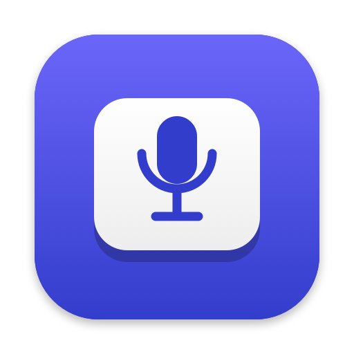

TalkKey
Hold a key, speak, and your words are typed wherever your cursor is. Runs entirely on your Mac.
Download for MacWhat it does
Any key you like
Hold your hotkey to talk, double-tap for hands-free. F13–F20, or Right Option on a laptop.
Fast and accurate
OpenAI's Whisper model on your Mac's Neural Engine — text in well under a second.
Cleans up as you go
Punctuation, filler words, and "no wait, I meant…" corrections, using Apple Intelligence on-device.
Private by design
Your voice never leaves your Mac. No account, no tracking.
Install
- Open TalkKey.dmg and drag TalkKey onto Applications.
- Open TalkKey. A short setup walks you through allowing the Microphone and turning TalkKey on under Accessibility, then downloads the speech model once (about 630 MB).
- Pick your hotkey, click into any text field, hold the key and talk. Say “question mark”, “comma”, or “new line” for punctuation.
Requirements
- A Mac with Apple Silicon (M1 or newer), macOS 14 Sonoma or later.
- Grammar cleanup needs macOS 26 with Apple Intelligence turned on. Without it you still get accurate, punctuated text.
Privacy
Everything happens on your Mac: speech-to-text, grammar cleanup, and typing. Recordings aren't saved, and there are no accounts, analytics, or tracking. The only network use is the one-time speech-model download from Hugging Face. Full privacy details.